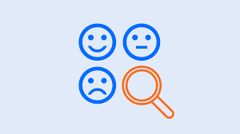

مرحبا بكم في ملفي الشخصي
معك شيماء
من أنا
شغوفة بدمج البرمجة والتحليل والتقنية لابتكار حلول وتجارب رقمية
تعليمي
رحلتي الأكاديمية
ماجستير علوم البيانات وتحليلها
جامعة جدة | 2024 - 2026اكتسبت خبرة واسعة في الإحصاءات والتقنيات الكمية، التي تُعدّ أساسًا لتحليل البيانات واتخاذ قرارات دقيقة مبنية على الأدلة، مما يساعد في التنبؤ بالمستقبل وتقليل المخاطر.
تعلمت كيفية إعداد البيانات ومعالجتها لتنظيف وتنظيم وتحويل البيانات الخام إلى صيغة مناسبة للتحليل، مما يسهم في تحسين دقة القرارات.
استخدام التعلم الآلي لبناء نماذج تنبؤية تتيح اتخاذ قرارات تلقائية من خلال تحليل البيانات واكتشاف الأنماط.
العمل مع البيانات الضخمة لتحليل كميات هائلة ومتنوعة من البيانات بسرعة عالية، واستخلاص رؤى دقيقة تدعم اتخاذ القرار في الوقت الفعلي.
فهم وتطبيق تقنيات معالجة اللغة الطبيعية (NLP) التي تساعد الحواسيب على تفسير وتحليل اللغة البشرية المكتوبة والمنطوقة لتحسين التفاعل بين الإنسان والآلة.
بكالوريوس الرياضيات
جامعة جدة | 2015 - 2020تعلمت المعادلات التفاضلية والتكاملية، التي تُستخدم في وصف التغيرات الديناميكية والنماذج الفيزيائية والهندسية، وتحليل الظواهر المستمرة في الزمن أو المكان.
تعلمت التحليل العددي لتقريب حلول المعادلات الرياضية والمشكلات التي يصعب حلها تحليليًا.
درست التحليل الحقيقي لفهم خصائص الدوال الحقيقية مثل الاتصال، النهايات، الاشتقاق، والتكامل، مما يوفر أساسًا دقيقًا للرياضيات المتقدمة وتطبيقاتها.
التحليل المركب مكّنني من دراسة الدوال ذات المتغيرات العقدية، وهو مجال يُستخدم على نطاق واسع في الفيزياء والهندسة لحل المشكلات المعقدة.
تعلمت الجبر المجرد لفهم البنى الجبرية مثل الزُمر والحلقات والحقول، والتي تُستخدم في التشفير، علوم الحاسوب، ونظرية الأعداد.
اكتسبت مهارات في الرياضيات المتقطعة، والتي تركز على الهياكل المنفصلة مثل المجموعات، الرسوم البيانية، المنطق، والخوارزميات، وتُعدّ أساسًا في علوم الحاسوب.
خبرتي
رحلتي المهنية
محللة أعمال
2024 - حاليًاجمع وتحليل متطلبات الأعمال متعددة الوظائف بما يضمن توافقها مع الأهداف الاستراتيجية للمشاريع.
تحويل متطلبات العمل التفصيلية إلى مواصفات فنية دقيقة وقابلة للتنفيذ من قبل فرق التطوير.
العمل كحلقة وصل فعّالة بين أصحاب المصلحة من رجال الأعمال والفرق التقنية لتسهيل التواصل وتقليل التأخير في تنفيذ المشاريع.
تعزيز التعاون بين الإدارات المختلفة، مما أسهم في تنفيذ المشاريع بكفاءة وتسليمها في الوقت المحدد.
عمل حر - مطورة ويب
2022 - حالياًبناء ودعم أنظمة الواجهة الخلفية باستخدام PHP (Laravel) لتحسين الأداء والموثوقية.
تكامل واجهات برمجة التطبيقات وخدمات الدفع لتمكين معاملات مستخدم سلسة وآمنة.
التعاون الوثيق مع المصممين لتحويل مفاهيم واجهة المستخدم وتجربة المستخدم إلى تطبيقات تفاعلية وسلسة.
تحسين كفاءة تحميل الوسائط لتعزيز سرعة الموقع وتحسين تجربة المستخدم.
مساعدة مدرب
2021 - 2023دعم المدربين في الإجابة على استفسارات المتدربين وتقديم التوضيحات اللازمة.
مراجعة وتقييم الواجبات والمشاريع الطلابية، وتقديم ملاحظات بنّاءة تساعد في تحسين الأداء الأكاديمي.
التعاون مع المدربين للحفاظ على جودة المحتوى التدريبي وضمان تفاعل الطلاب طوال فترة التعلم.
مهاراتي التقنية
التقنيات التي تعاملت معها
مشاريعي
عرض لأبرز المشاريع التي عملت عليها

تحليل المشاعر عملاء سيفورا
يهدف المشروع إلى تطوير نموذج ذكي لتحليل مراجعات المستخدمين وتحديد ما إذا كانت المشاعر إيجابية أو سلبية، باستخدام تقنيات معالجة اللغة الطبيعية (NLP) ونماذج التعلم العميق مثل LSTM وCNN.
التنبؤ بالطقس
يهدف المشروع إلى تطوير نموذج تنبؤي لحالة الطقس المستقبلية اعتمادًا على بيانات الأرصاد الجوية، باستخدام خوارزميات تعلم الآلة مثل الانحدار اللوجستي، الغابة العشوائية، وXGBoost لتحليل العوامل المناخية كدرجة الحرارة والرطوبة وسرعة الرياح.
قريبا
المزيد من الحلول المبتكرة والأعمال الإبداعية في الأفق.